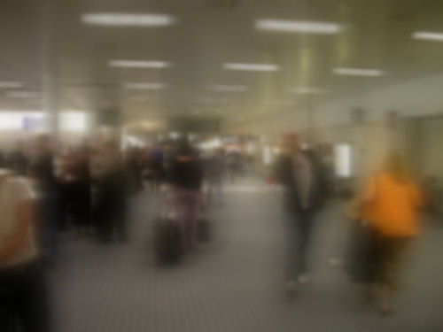
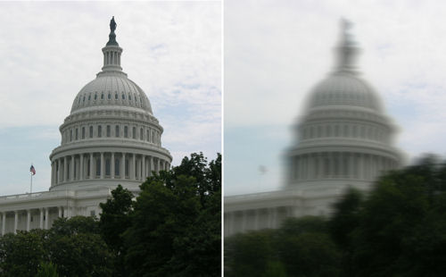

Затуманенное зрение является возможным осложнением LASIK. Как и при других нарушениях зрения, нечеткость зрения варьируется у пациентов от легкой до тяжелой степени. Некоторые пациенты описывают это как "видение аквариума" или "вазолиновое зрение";. Нечеткое зрение после операции LASIK может быть не поддающимся коррекции с помощью очков. Некоторые пациенты сообщают, что их зрение нечеткое при любом освещении, в то время как другие утверждают, что при слабом освещении зрение значительно ухудшается. Многие пациенты сообщают о потере контрастная чувствительность и неспособность видеть мелкие детали. Некоторые пациенты сообщают, что их зрение ухудшается. мазать в одном или нескольких направлениях.

